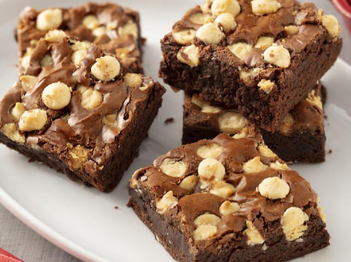
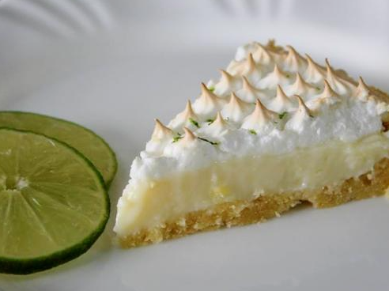

Brownies
- 150 gramas de chocolate meio amargo
- 100 gramas de manteiga sem sal
- 160 gramas de açuçar
- 6ml de essência de baunilha
- 100 gramas de ovo
- 105 gramas de farinha de trigo
- 1 grama de sal
- 60 gramas de castanha de cajú

Torta de limão
- 4 claras de ovos
- 200 gramas de biscoito maisena
- 150 gramas de manteiga
- 1 lata de leite condensado
- 1 caixa de creme de leite
- suco de 5 limões
- raspas de 2 limões
- 3 colheres de (sopa) de açucar
- raspas de 2 limões para decorar

Churros
- 2 colheres de (sopa) de açucar
- 2 colheres de (sopa) de manteiga
- 1/4 óleo
- 1 pitada de sal (se a manteiga não tiver)
- doce de leite
- 300 gramas de farinha de trigo
- 250 ml de água
- açucar e canela para passar nos churros
- 3 ovos

Pé de moleque
- 3 xícaras de chá de amendoim cru
- 2 xícaras de chá de açucar
- 1 xícara de chá karo
- 1 colher de chá de bicarbonato de sódio/
oficial.png)